📑 目录（Table of Contents）
第一章：碰撞事件传感器 （sensor.other.collision）
- 第一章：CARLA 碰撞事件传感器系统（sensor.other.collision）
- 1 模块概览
- 2 传感器注册与调用原理
- 3 数据结构：CollisionEvent
- 4 序列化器分析
- 5 RawData 与 SensorData 概述
- 6 Python API 使用示例
- 7 小结与拓展
第二章：空传感器（sensor.other.noop）
- 第二章：CARLA 空传感器系统（sensor.other.noop）
- 1 模块概览
- 2 传感器注册与调用原理
- 3 序列化器分析
- 4 数据结构与传输机制
- 5 Python API 使用示例
- 6 小结与拓展
第三章：惯性测量单元传感器 （sensor.other.imu）
- 第三章：CARLA惯性测量单元传感器系统（sensor.other.imu）
- 1 模块概览
- 2 工作流程与序列化机制
- 3 数据结构详解
- 4 Python API 调用示例
- 5 拓展用例与集成应用
- 6 限制与对比分析
- 7 总结与建议
第四章：全球导航卫星系统传感器 （sensor.other.gnss）
- 第四章：CARLA 全球导航卫星系统传感器（sensor.other.gnss）
- 1 模块概览
- 2 工作流程与传输机制
- 3 数据结构解析
- 4 序列化机制分析
- 5 Python API 使用示例
- 6 应用拓展与组合使用
- 7 总结与建议
第五章：车道入侵传感器 （sensor.other.lane_invasion）
第六章：激光雷达传感器 （sensor.lidar.ray_cast）
第七章：障碍物检测传感器 （sensor.other.obstacle）
第八章：RGB 摄像头传感器 （sensor.camera.rgb）
第九章：深度相机传感器 （sensor.camera.depth）
第十章：语义分割相机传感器（sensor.camera.semantic_segmentation）
第十一章：雷达传感器（sensor.radar.ray_cast）
第十二章：责任敏感安全传感器（sensor.other.rss）
第一章：碰撞事件传感器（sensor.other.collision）
1 模块概览
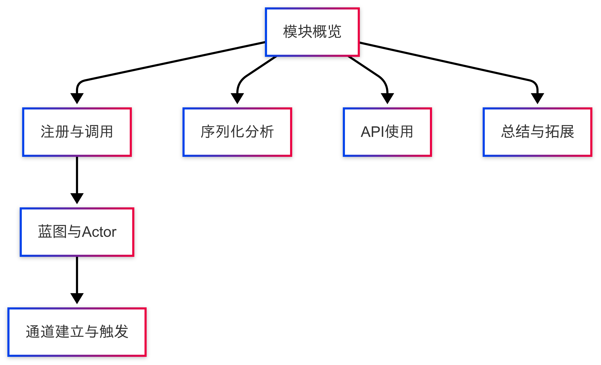
本章详细讲解 CARLA 模拟器中的一类简单传感器：sensor.other.collision，即碰撞事件传感器。该传感器不输出连续的数据流信息，而是在检测到实体碰撞时以事件形式即时触发。其设计初衷是为用户提供车辆与环境中其他对象之间物理交互的监控能力。
在自动驾驶仿真、强化学习安全评估或碰撞规避算法验证中，sensor.other.collision 提供了关键的反馈信号。通过对其数据结构、序列化机制与客户端回调触发流程的深入解析，可全面理解该传感器在 CARLA 感知系统中的运行机制及其工程实现。
2 传感器注册与调用原理
CARLA 所有传感器，包括 sensor.other.collision，均基于统一的 Actor 注册与绑定框架。其创建与工作流程可分为以下几个核心阶段：
- 蓝图注册阶段：CARLA 所有传感器类型在 Unreal Engine 的蓝图系统中定义，供客户端调用。
- Actor 创建阶段：Python 客户端通过
world.spawn_actor()创建"sensor.other.collision"实例。 - 传感器通道建立：Actor 自动绑定底层的
SensorData数据类型，用户通过.listen()注册事件处理函数。 - 事件触发与传输机制：
- 服务端生成
CollisionEvent事件（Bullet 引擎） - 使用
CollisionEventSerializer编码为RawData - 通过 RPC 网络发送
- 客户端使用
Deserialize()解码为SensorData - 注入回调函数中进行处理 该流程构成事件捕捉 → 数据序列化 → 网络传输 → 解码还原 → 客户端处理的完整通路。
3 数据结构：CollisionEvent
定义文件：carla/sensor/data/CollisionEvent.h
struct CollisionEvent {
rpc::Actor self_actor;
rpc::Actor other_actor;
geom::Vector3D normal_impulse;
};
self_actor：传感器附着实体（如车辆）other_actor：碰撞对象（如障碍物、NPC）normal_impulse：冲击力矢量，反映碰撞强度与方向
4 序列化器分析：CollisionEventSerializer
定义文件：
CollisionEventSerializer.h
CollisionEventSerializer.cpp
struct Data {
rpc::Actor self_actor;
rpc::Actor other_actor;
geom::Vector3D normal_impulse;
MSGPACK_DEFINE_ARRAY(self_actor, other_actor, normal_impulse)
};
template <typename SensorT>
static Buffer Serialize(
const SensorT &,
rpc::Actor self_actor,
rpc::Actor other_actor,
geom::Vector3D normal_impulse) {
return MsgPack::Pack(Data{self_actor, other_actor, normal_impulse});
}
static SharedPtr<SensorData> Deserialize(RawData &&data) {
return SharedPtr<SensorData>(new data::CollisionEvent(std::move(data)));
}
5 RawData 与 SensorData 概述
数据结构定义：
RawData.h
SensorData.h
class RawData {
public:
size_t GetFrame() const;
double GetTimestamp() const;
const rpc::Transform &GetSensorTransform() const;
const uint8_t *begin() const;
size_t size() const;
};
class SensorData : public EnableSharedFromThis<SensorData>, private NonCopyable {
protected:
SensorData(size_t frame, double timestamp, const rpc::Transform &sensor_transform);
};
6 Python API 使用示例
参考文件：collision_sensor.py
def on_collision(event):
actor = event.other_actor
impulse = event.normal_impulse
print(f"发生碰撞！对象类型：{actor.type_id}，冲击向量：{impulse}")
blueprint_library = world.get_blueprint_library()
bp = blueprint_library.find('sensor.other.collision')
transform = carla.Transform(carla.Location(x=0, y=0, z=2.0))
sensor = world.spawn_actor(bp, transform, attach_to=vehicle)
sensor.listen(on_collision)
7 小结与拓展
sensor.other.collision是轻量、事件驱动的传感器- 使用
MsgPack + RawData组合，编码效率高 - 常用于：碰撞检测、事故分析、惩罚信号生成
可拓展方向：
- 增加字段（如速度向量、碰撞位置）
- 结合图像、GNSS 数据实现回溯系统
- 与强化学习结合生成动态规避策略
第二章：CARLA 空传感器系统（sensor.other.noop）
1 模块概览
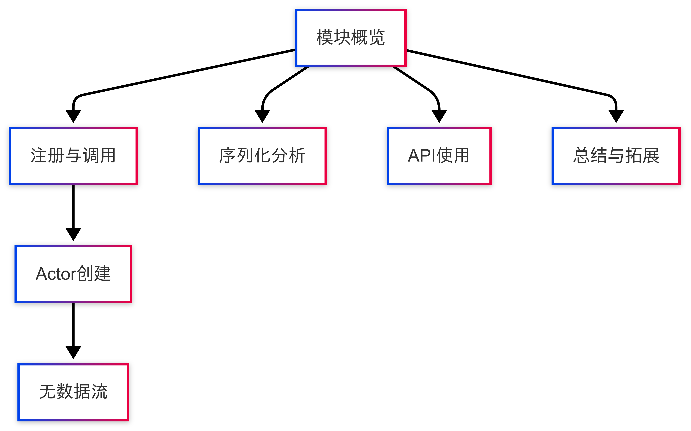
本章介绍 CARLA 模拟器中最为简化的一类传感器：sensor.other.noop，即“无操作传感器”（No-Operation Sensor）。顾名思义，该传感器不会向客户端发送任何数据，其存在的意义更多是作为客户端挂载传感器的占位符、功能测试器或新传感器开发的最小模板。
sensor.other.noop 适用于以下场景：
- 构建新型传感器时的起始模板；
- 用于网络与回调机制调试，无需实际数据；
- 占位传感器（需要绑定但暂时不产出数据）；
- 模拟传感器失败或无响应场景下的系统行为。
其核心特征是：不参与数据流的任何阶段，服务端不会推送数据，客户端接收到数据则立即报错。
2 传感器注册与调用原理
sensor.other.noop 遵循 CARLA 所有传感器统一的注册、挂载、通信框架，其调用流程包括以下几个阶段：
- 蓝图注册阶段：该传感器在 Unreal Engine 蓝图系统中以
"sensor.other.noop"注册，蓝图库中包含其类型定义。 - Actor 创建阶段：客户端通过
world.spawn_actor()创建该传感器实例，传入"sensor.other.noop"字符串作为蓝图 ID，实例可附着至车辆或动态对象。 - 传感器监听绑定：
- 可通过
.listen()注册 Python 回调函数； - 但由于此传感器不会生成任何事件，回调函数永远不会被实际调用；
- 若数据进入系统，将由序列化器直接拒绝并抛出异常。
3 序列化器分析：NoopSerializer
该序列化器专为“客户端不接收数据”的传感器设计，核心逻辑是禁止任何数据反序列化。
3.1 接口定义
/// Dummy serializer that blocks all the data.
class NoopSerializer {
public:
[[noreturn]] static SharedPtr<SensorData> Deserialize(RawData &&data);
};
说明：
[[noreturn]]是 C++11 标准修饰符，表示该函数永不返回；- 调用该函数将抛出异常，标志该传感器设计为“不可反序列化”。
3.2 函数实现
SharedPtr<SensorData> NoopSerializer::Deserialize(RawData &&) {
throw_exception(std::runtime_error("NoopSerializer: Invalid data received."));
}
说明：
- 使用 CARLA 提供的
throw_exception工具函数； - 一旦客户端尝试处理此类型数据，即触发中断错误；
- 该机制确保
sensor.other.noop无法被误用。
4 数据结构与传输机制
该传感器不绑定任何结构化数据类型：
- 不包含自定义数据结构（如
NoopEvent）； - 不通过
RawData传输任何内容； - 无有效
SensorData派生类实例生成； - 虽然支持
.listen()注册机制，但永不触发。
因此，sensor.other.noop 是一种“存在但不发声”的传感器，仅用于挂载占位或调试目的。
5 Python API 使用示例
虽然该传感器不传输数据，仍可正常在 Python 中创建与注册监听。
# 定义回调函数（注意：不会被调用）
def on_noop_event(event):
print("此处不应出现任何输出")
# 获取蓝图库并查找蓝图
bp = world.get_blueprint_library().find('sensor.other.noop')
# 设置传感器相对位置
transform = carla.Transform(carla.Location(x=0, y=0, z=2.0))
# 创建传感器并附着至车辆
noop_sensor = world.spawn_actor(bp, transform, attach_to=vehicle)
# 注册监听函数（将不会触发）
noop_sensor.listen(on_noop_event)
可选调试建议：
- 可用日志验证传感器挂载成功；
- 可调用
.destroy()观察销毁逻辑； - 可组合多个传感器观察
.listen()机制行为。
6 小结与拓展
sensor.other.noop是 CARLA 中结构最简、用途最特殊的一类传感器；- 其核心设计目的是：禁止数据流通，仅做占位和调试；
- 非常适合作为自定义传感器的开发模板或序列化链测试工具。
拓展建议：
- 作为新事件传感器的起点模板；
- 用于测试
.listen()和.destroy()回调流程； - 模拟传感器故障、异常或丢包处理机制；
- 可组合图像、IMU 等实际传感器测试是否发生调用竞争或系统冲突。
第三章：惯性测量单元传感器 （sensor.other.imu）
1 模块概览
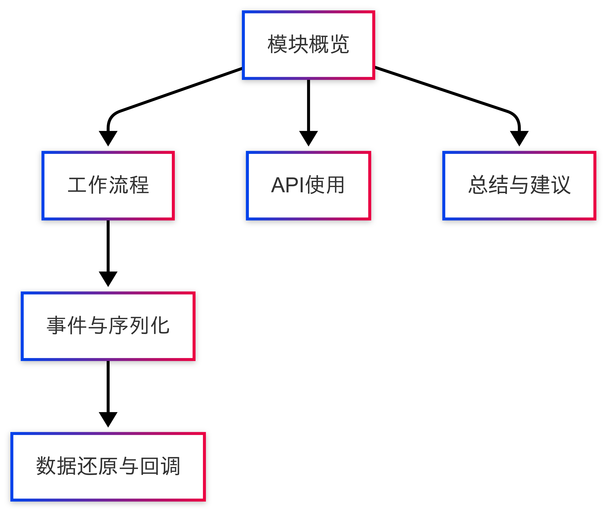
sensor.other.imu 是 CARLA 提供的惯性测量单元（IMU）传感器，用于捕捉车辆的三维加速度、角速度及方向信息，广泛应用于轨迹估计、姿态解算、导航融合等自动驾驶仿真任务中。
该传感器会周期性发送事件，传递以下数据：
- 加速度计：三轴加速度
Vector3D(x, y, z)，单位 m/s² - 陀螺仪：三轴角速度
Vector3D(x, y, z)，单位 rad/s - 罗盘：航向角（方向朝向），单位弧度
默认以 20Hz 更新频率输出，支持在蓝图中调整采样速率。
2 工作流程与序列化机制
IMU 传感器的数据流程如下：
- 事件捕获：模拟器服务端采集当前帧的 IMU 数据
- 数据序列化：使用
IMUSerializer将加速度、角速度与罗盘值打包为 MsgPack 编码字节流（参见IMUSerializer.h/.cpp） - 网络传输：打包后的
RawData通过 RPC 系统传输至客户端 - 数据还原：客户端通过
IMUMeasurement类将字节流还原为结构化对象 - 回调触发：Python 层注册的
.listen()回调函数获得该事件并执行处理逻辑
3 数据结构详解
IMU 数据通过 IMUMeasurement 类对外暴露，定义位置：
📄 carla/sensor/data/IMUMeasurement.h
该类封装如下：
class IMUMeasurement : public SensorData {
public:
geom::Vector3D GetAccelerometer() const;
geom::Vector3D GetGyroscope() const;
float GetCompass() const;
};
- 加速度：IMU 加速度计测得的三轴值
- 角速度：陀螺仪角速度
- 罗盘值：航向角（通常为 0\~2π 的弧度）
所有字段通过 IMUSerializer::Deserialize() 方法从 RawData 还原，序列化结构如下：
struct IMUData {
Vector3D accelerometer;
Vector3D gyroscope;
float compass;
};
通过 MSGPACK_DEFINE_ARRAY(acc, gyro, compass) 支持 MsgPack 自动编码。
4 Python API 调用示例
以下代码展示如何部署 IMU 传感器、注册监听器，并处理接收到的数据：
def on_imu(event):
acc = event.accelerometer
gyro = event.gyroscope
compass = event.compass
print(f"[IMU] 加速度: {acc} | 角速度: {gyro} | 罗盘: {compass}")
# 创建传感器
bp = world.get_blueprint_library().find('sensor.other.imu')
transform = carla.Transform(carla.Location(x=0, y=0, z=1.0))
imu_sensor = world.spawn_actor(bp, transform, attach_to=vehicle)
imu_sensor.listen(on_imu)
5 拓展用例与集成应用
IMU 常与 GNSS、相机、雷达等传感器联用，实现高级状态估计：
与 GNSS 融合：
def on_gnss(gnss):
print(f"[GNSS] 纬度: {gnss.latitude}, 经度: {gnss.longitude}")
imu_sensor.listen(on_imu)
gnss_sensor.listen(on_gnss)
估算车辆速度（积分法，简化示例）：
velocity = carla.Vector3D()
def on_imu_integration(imu):
global velocity
dt = 0.05 # 默认 20Hz
a = imu.accelerometer
velocity.x += a.x * dt
velocity.y += a.y * dt
velocity.z += a.z * dt
print(f"估算速度: {velocity}")
6 限制与对比分析
| 属性 | CARLA IMU | 真实 IMU（如 Xsens） |
|---|---|---|
| 更新频率 | 默认 20Hz，可调 | 最高 > 1000Hz |
| 噪声建模 | 默认无噪声 | 含偏置、漂移等随机扰动 |
| 时间同步 | 自动与仿真对齐 | 需硬件级时间戳 |
| 数据输出 | 无 CSV 导出 | 支持标准格式 |
7 总结与建议
sensor.other.imu提供结构清晰、易用的姿态/运动状态反馈能力；- 可拓展为带噪模型、加权滤波、数据融合平台；
- 建议与
sensor.other.gnss、sensor.camera.rgb联合使用，支持轨迹分析、三维重建等研究任务； - 后续可引入 IMU 噪声模拟模块、数据导出功能。
第四章：全球导航卫星系统传感器 （sensor.other.gnss）
1 模块概览
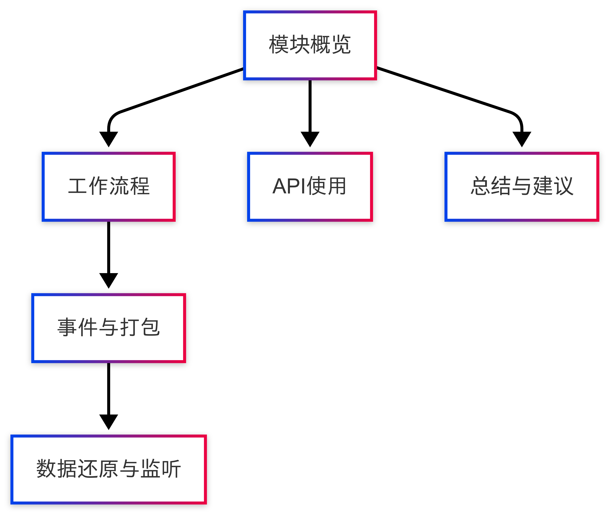
sensor.other.gnss 是 CARLA 中用于获取地理位置信息的传感器，模拟真实世界中的全球导航卫星系统（GNSS）设备，如 GPS、北斗等。传感器输出包括：
- 经度（longitude）：单位°，范围 $-180°, 180°$
- 纬度（latitude）：单位°，范围 $-90°, 90°$
- 海拔（altitude）：单位为米，代表相对于海平面的高度
该传感器可用于场景定位、路径重建、轨迹分析等仿真任务中，常与 IMU、地图匹配模块联合使用。
2 工作流程与传输机制
GNSS 的数据传输流程如下：
- 事件生成：服务端在当前仿真帧中生成地理位置信息
- 数据打包：通过
GnssSerializer将GeoLocation序列化为 MsgPack 格式的RawData - 网络传输：打包后的字节流通过 CARLA 的 RPC 系统发送给客户端
- 数据还原：客户端使用
GnssMeasurement类解码RawData，得到结构化数据 - Python 层监听：
.listen()接口注册的函数在每次更新中触发回调
3 数据结构解析
定义位置：GnssMeasurement.h
class GnssMeasurement : public SensorData {
public:
geom::GeoLocation GetGeoLocation() const;
double GetLongitude() const;
double GetLatitude() const;
double GetAltitude() const;
};
其中：
GeoLocation结构体封装了{ longitude, latitude, altitude }- 每帧更新一次，数据来源为服务端环境模拟的车辆真实位置信息
默认输出单位为：
| 字段 | 类型 | 单位 |
|---|---|---|
| Longitude | double | 度（°） |
| Latitude | double | 度（°） |
| Altitude | double | 米（m） |
4 序列化机制分析
定义文件：
GnssSerializer.h
GnssSerializer.cpp
// 客户端解码逻辑
SharedPtr<SensorData> GnssSerializer::Deserialize(RawData &&data) {
return SharedPtr<SensorData>(new data::GnssMeasurement(std::move(data)));
}
序列化结构体使用 MSGPACK_DEFINE_ARRAY 自动完成：
struct GeoLocation {
double latitude;
double longitude;
double altitude;
MSGPACK_DEFINE_ARRAY(latitude, longitude, altitude)
};
该机制保证 GNSS 数据体积小、解码快，适合高频传输与跨语言兼容。
5 Python API 使用示例
# 定义回调函数
def on_gnss(event):
lat = event.latitude
lon = event.longitude
alt = event.altitude
print(f"[GNSS] 纬度: {lat:.6f}, 经度: {lon:.6f}, 海拔: {alt:.2f}m")
# 创建并绑定传感器
bp = world.get_blueprint_library().find('sensor.other.gnss')
transform = carla.Transform(carla.Location(x=0.7, y=0.0, z=1.6))
gnss_sensor = world.spawn_actor(bp, transform, attach_to=vehicle)
gnss_sensor.listen(on_gnss)
可选蓝图参数（bp.set_attribute(...)）包括：
| 属性 | 描述 | 默认值 |
|---|---|---|
sensor_tick |
传感器更新时间（秒） | 0.05 |
6 应用拓展与组合使用
GNSS 传感器常用于以下场景：
- 路径重建：记录车辆运行轨迹用于回放
- 定位精度验证：与地图匹配算法结合测试鲁棒性
- IMU + GNSS 融合：实现基于扩展卡尔曼滤波（EKF）的定位
示例：GNSS 与 IMU 联合使用
def on_fused_data(gnss, imu):
location = (gnss.latitude, gnss.longitude)
acceleration = imu.accelerometer
print(f"[FUSION] 坐标: {location}, 加速度: {acceleration}")
该模式可用于轨迹重建、地理围栏检测、自动驾驶行为控制等任务。
7 总结与建议
sensor.other.gnss提供高精度地理位置信息，是自动驾驶仿真系统中的关键模块；- 与 IMU、摄像头、地图等配合可实现高级 SLAM 与定位算法验证；
- 若需实现更真实的模型，可拓展添加噪声模型、地形遮挡、信号丢失模拟等功能。
第五章：车道入侵传感器系统 （sensor.other.lane_invasion）
1 模块概览
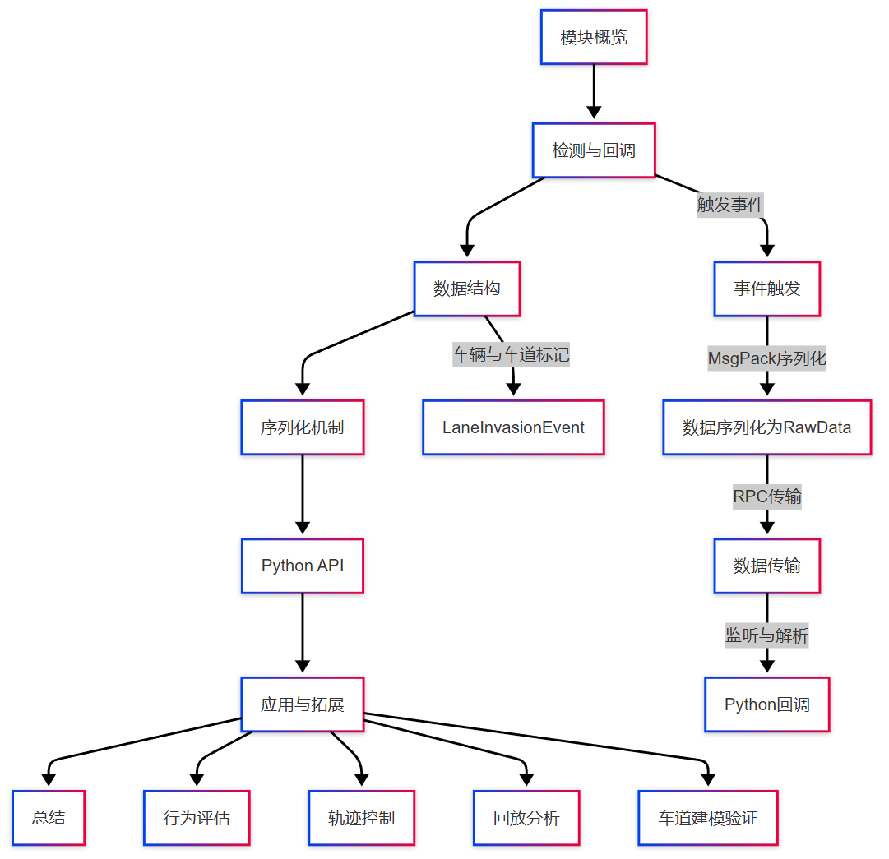
sensor.other.lane_invasion 是 CARLA 提供的一类事件型传感器，用于监测车辆是否跨越车道线。该传感器在每次检测到入侵车道标线时触发事件，并将跨越的车道线类型（如实线、虚线）以枚举列表形式返回。
在自动驾驶安全策略、强化学习训练以及车道保持辅助系统（LKA）中，lane_invasion 传感器常用于实现惩罚反馈、路径修正与轨迹约束。
2 检测流程与回调机制
其工作流程为：
- 服务端：由地图模块检测当前车辆是否偏离其预定车道；
- 事件触发：若检测到跨越车道线，则生成
LaneInvasionEvent实例； - 数据打包：使用
LaneInvasionEventSerializer将入侵线类型序列化为RawData； - 网络传输：通过 RPC 系统发送至客户端；
- Python 接收：回调函数被
.listen()注册监听，获取并解析车道入侵信息。
3 数据结构：LaneInvasionEvent
定义文件：carla/sensor/data/LaneInvasionEvent.h
struct LaneInvasionEvent {
rpc::Actor actor;
std::vector<rpc::LaneMarking> crossed_lane_markings;
};
actor：车辆自身 Actor 实例；crossed_lane_markings：当前帧中车辆所跨越的所有车道线类型（可为多个），类型为枚举，如Broken,Solid,DoubleSolid等。
该结构紧凑、频次高，适合用于连续动态监测。
4 序列化机制分析
定义文件：
LaneInvasionEventSerializer.h
LaneInvasionEventSerializer.cpp
struct Data {
rpc::Actor actor;
std::vector<rpc::LaneMarking> markings;
MSGPACK_DEFINE_ARRAY(actor, markings)
};
template <typename SensorT>
static Buffer Serialize(const SensorT &, rpc::Actor actor, std::vector<rpc::LaneMarking> markings) {
return MsgPack::Pack(Data{actor, markings});
}
static SharedPtr<SensorData> Deserialize(RawData &&data) {
return SharedPtr<SensorData>(new data::LaneInvasionEvent(std::move(data)));
}
说明：
- 序列化结构以 Actor + 多个 LaneMarking 构成，采用 MsgPack 自动打包；
RawData解码后重建LaneInvasionEvent对象并回调处理。
5 Python API 使用示例
def on_lane_invasion(event):
markings = event.crossed_lane_markings
types = [m.type for m in markings]
print(f"[LANE INVASION] 跨越线型: {types}")
# 注册传感器
bp = world.get_blueprint_library().find('sensor.other.lane_invasion')
transform = carla.Transform(carla.Location(x=0, y=0, z=1.0))
sensor = world.spawn_actor(bp, transform, attach_to=vehicle)
sensor.listen(on_lane_invasion)
6 应用案例与拓展建议
该传感器在以下任务中具有实用价值：
- 行为评估：在强化学习中作为负反馈信号（lane penalty）；
- 轨迹控制：实时检测偏离车道行为，启用修正或报警；
- 回放分析：结合 IMU、摄像头数据，回溯偏航过程；
- 车道建模验证：辅助验证 HD Map 与车辆车道感知的精度一致性。
拓展建议：
- 与 IMU、GNSS 联合，用于重建入侵轨迹与偏离角度；
- 支持配置忽略特定线型（如仅监控实线跨越）；
- 将入侵事件导出为 CSV/JSON 用于行为可视化分析。
7 小结
sensor.other.lane_invasion是 CARLA 中重要的语义事件传感器；- 它以低带宽方式提供关键路径偏离信息，适用于控制反馈与安全分析；
- 未来可与地图标注、规划模块更深度融合，支持高精轨迹约束与驾驶决策研究。
第六章：激光雷达传感器系统 （sensor.lidar.ray_cast）
1 模块概览
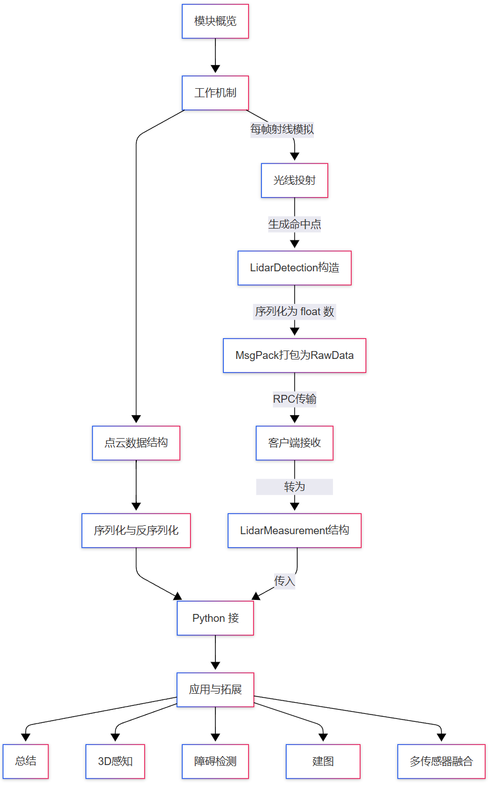
sensor.lidar.ray_cast 是 CARLA 模拟器中最常用的激光雷达传感器，基于光线投射（ray casting）机制模拟真实 LiDAR 装置的点云采集过程。它可高效模拟不同线数、角度、旋转频率和噪声模型的激光扫描设备（如 Velodyne HDL-64、Ouster OS1 等）。
激光雷达传感器在 3D 感知、环境建图、障碍物检测与路径规划等任务中具有核心地位，其输出为连续的三维点云流数据。
2 工作机制与原理
sensor.lidar.ray_cast 基于服务端的射线仿真实现：
- 光线发射：每帧从传感器原点按设定参数发射 N 条激光束（扫描线）；
- 碰撞检测：光线与场景中可交物体进行交点检测（基于 GPU 加速）；
- 数据采样：记录每条光线的命中距离、角度、强度等；
- 点云生成：生成形如
[x, y, z, intensity]的 3D 点云； - 数据打包：打包为
RawData，通过 RPC 网络传输至客户端； - 解码还原：客户端使用
LidarMeasurement解码并提供访问接口。
该传感器支持设定旋转频率、扫描范围、垂直角分布、点密度、噪声模型等，是极为灵活的仿真组件。
3 数据结构与点云格式
定义文件：carla/sensor/data/LidarMeasurement.h
struct LidarDetection {
float x; // 点的 X 坐标
float y; // 点的 Y 坐标
float z; // 点的 Z 坐标
float intensity; // 回波强度
};
一个完整的扫描周期包含多个 LidarDetection 点，构成一个 LidarMeasurement 实例：
class LidarMeasurement : public SensorData {
public:
size_t size() const;
const LidarDetection &at(size_t index) const;
const LidarDetection *begin() const;
};
每个点均包含空间坐标和强度，单位均为米（m），强度为 0\~1 之间的浮点数。
4 序列化与反序列化流程
定义文件：
LidarSerializer.h
LidarSerializer.cpp
- 服务端使用
LidarSerializer::Serialize()将所有LidarDetection数据打包成连续内存块； - 客户端通过
LidarMeasurement构造函数解码：
SharedPtr<SensorData> LidarSerializer::Deserialize(RawData &&data) {
return SharedPtr<SensorData>(new data::LidarMeasurement(std::move(data)));
}
点云被连续存储为 [float x, y, z, intensity] * N 形式，传输高效，占用带宽较低，适合高频实时仿真。
5 Python API 示例与配置参数
以下代码展示如何部署 LiDAR 传感器，并处理点云数据：
def on_lidar(data):
points = np.frombuffer(data.raw_data, dtype=np.float32).reshape(-1, 4)
print(f"[LIDAR] 点数: {len(points)}, 第一个点: {points[0]}")
bp = world.get_blueprint_library().find('sensor.lidar.ray_cast')
bp.set_attribute('range', '100.0')
bp.set_attribute('rotation_frequency', '10.0')
bp.set_attribute('channels', '32')
bp.set_attribute('points_per_second', '56000')
transform = carla.Transform(carla.Location(x=0, y=0, z=2.5))
lidar_sensor = world.spawn_actor(bp, transform, attach_to=vehicle)
lidar_sensor.listen(on_lidar)
常用参数表：
| 属性名 | 描述 | 默认值 |
|---|---|---|
range |
最大检测距离（m） | 50.0 |
rotation_frequency |
每秒转速（Hz） | 10.0 |
channels |
激光线数（垂直） | 32 |
points_per_second |
点数密度 | 56000 |
upper_fov, lower_fov |
垂直视角上下限（°） | 10, -30 |
sensor_tick |
更新时间（s） | 0.05 |
6 应用场景与可拓展方向
应用场景：
- 3D 点云生成与可视化；
- 障碍物检测与跟踪（Obstacle Avoidance）；
- SLAM/地图构建（建图+定位）；
- 与摄像头图像对齐进行深度估计；
- 自动驾驶决策路径验证。
拓展方向：
- 引入激光噪声建模（如距离抖动、散射）；
- 增加反射材质模拟（如玻璃表面不回波）；
- 与相机坐标联合投影，实现点云图像融合；
- 点云导出为 PCD 格式供后处理工具使用（如 Open3D、PCL）。
7 总结
sensor.lidar.ray_cast 是 CARLA 中仿真精度最高、功能最丰富的连续型传感器。其基于 GPU 加速射线投射，提供高频、高密度、可配置的点云数据输出。
该模块适用于感知、规划、重建、避障等任务，是自动驾驶研究不可或缺的重要组件。
第七章：障碍物检测传感器系统 （sensor.other.obstacle）
1 模块概览
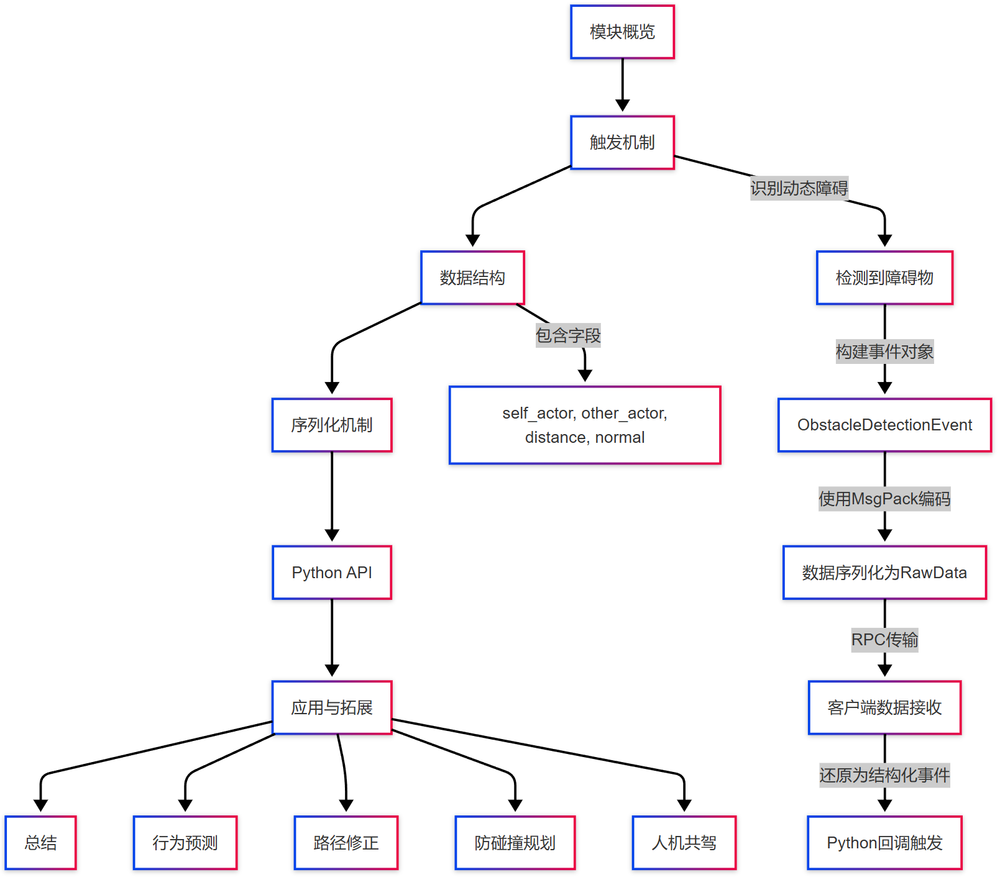
sensor.other.obstacle 是 CARLA 提供的一类事件触发型传感器，用于在仿真环境中检测车辆或行人前方的潜在障碍物。与 collision 传感器不同，它在实际碰撞发生之前触发，为自动驾驶决策提供提前预警。
该传感器通常被附着于主控实体（如车辆），当检测到其前方存在障碍物进入指定感知半径时，触发 ObstacleDetectionEvent，并返回障碍物的相对位置、速度、Actor ID 等信息。
2 触发机制与事件流程
该传感器通过连续评估障碍物与传感器附着体（通常为车辆）的相对几何关系触发事件：
- 服务端检测：在每帧仿真中，根据感知参数计算是否存在障碍物进入视野范围；
- 事件生成：若满足触发条件，生成
ObstacleDetectionEvent； - 数据编码：使用
ObstacleDetectionEventSerializer将障碍物 Actor ID、距离、速度等打包为RawData； - 网络传输：通过 CARLA 的 RPC 系统将数据推送至客户端；
- 回调触发：客户端通过
.listen()注册的 Python 回调函数接收该事件。
该机制支持近实时检测与事件压缩传输，适用于高频控制反馈与行为建模。
3 数据结构解析：ObstacleDetectionEvent
定义文件：carla/sensor/data/ObstacleDetectionEvent.h
struct ObstacleDetectionEvent {
rpc::Actor self_actor; // 传感器附着体（通常为主车）
rpc::Actor other_actor; // 检测到的障碍物
float distance; // 当前距离（单位：米）
geom::Vector3D normal; // 接触法线方向（用于避障判断）
};
说明：
self_actor：发出检测的实体，通常为车辆本体；other_actor：障碍物 Actor（动态物体，如其他车辆、行人）；distance：两者之间的欧式距离；normal：从障碍物指向车辆的法向向量，用于判断障碍方向与应对策略。
4 序列化机制说明
定义文件：
ObstacleDetectionEventSerializer.h
ObstacleDetectionEventSerializer.cpp
序列化结构体如下：
struct Data {
rpc::Actor self_actor;
rpc::Actor other_actor;
float distance;
geom::Vector3D normal;
MSGPACK_DEFINE_ARRAY(self_actor, other_actor, distance, normal)
};
序列化函数：
template <typename SensorT>
static Buffer Serialize(
const SensorT &,
rpc::Actor self_actor,
rpc::Actor other_actor,
float distance,
geom::Vector3D normal) {
return MsgPack::Pack(Data{self_actor, other_actor, distance, normal});
}
反序列化函数：
static SharedPtr<SensorData> Deserialize(RawData &&data) {
return SharedPtr<SensorData>(new data::ObstacleDetectionEvent(std::move(data)));
}
5 Python API 使用示例
def on_obstacle(event):
obstacle = event.other_actor
distance = event.distance
print(f"[OBSTACLE] 检测到障碍物 ID={obstacle.id} 距离={distance:.2f} m")
bp = world.get_blueprint_library().find('sensor.other.obstacle')
transform = carla.Transform(carla.Location(x=1.5, y=0.0, z=1.2))
sensor = world.spawn_actor(bp, transform, attach_to=vehicle)
sensor.listen(on_obstacle)
你也可以设置可选属性：
| 参数名 | 描述 | 默认值 |
|---|---|---|
distance |
检测范围（米） | 5.0 |
only_dynamics |
是否仅检测动态物体 | True |
6 应用场景与扩展建议
应用场景：
- 行为预测：检测交通密度与动态交互（如并线、跟车）；
- 路径修正：用于控制模块触发制动或绕行；
- 防碰撞规划：可作为 Collision Sensor 的前置预警；
- 人机共驾：识别动态障碍并介入人类驾驶行为；
- 强化学习训练：将“接近障碍物”事件作为负反馈。
拓展建议：
- 加入障碍物速度/加速度字段；
- 支持多障碍物并发检测结果；
- 支持障碍物类别过滤（如忽略行人、静态桩）；
- 联合摄像头进行视觉语义增强。
7 小结
sensor.other.obstacle提供动态障碍预警机制，是事件驱动型传感器；- 可提前于碰撞生成预警信号，在路径规划与行为建模中广泛使用；
- 推荐与 Collision、IMU、Radar 等模块联合使用，实现更完整的行为感知。
第八章：RGB 摄像头传感器系统（sensor.camera.rgb）
1 模块概览
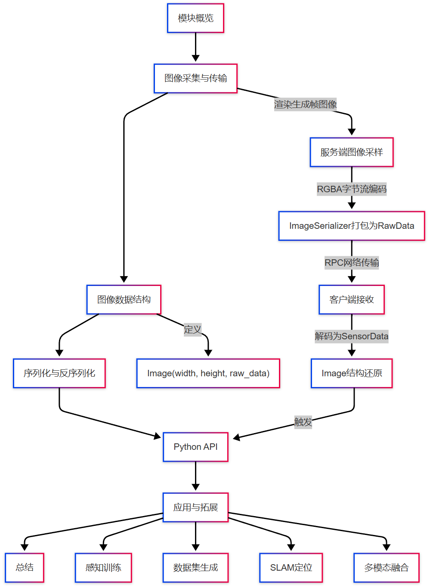
sensor.camera.rgb 是 CARLA 中最基础且最常用的图像传感器，模拟真实世界中的 RGB 相机输出，生成三通道图像（Red, Green, Blue），支持用户自定义分辨率、视场角、帧率等参数。
该传感器广泛应用于以下任务：
- 自动驾驶中的目标检测、语义分割等视觉感知任务；
- 数据集构建（如 nuScenes、KITTI 格式）；
- 多传感器融合（如与 LiDAR、IMU 联合使用）；
- 场景渲染与仿真回放。
2 图像采集与传输机制
RGB 相机传感器的数据处理流程如下：
- 渲染采样：服务端使用 Unreal Engine 渲染模块生成当前视角图像帧；
- 图像打包：图像帧由
ImageSerializer编码为二进制RawData； - 网络传输：通过 RPC 系统将图像流传输至客户端；
- 数据还原：客户端自动解码为
sensor.data.Image实例； - Python 处理：注册的
.listen()回调函数处理图像帧，通常用于保存或神经网络推理。
3 数据结构说明：Image
定义文件：carla/sensor/data/Image.h
图像结构定义如下：
class Image : public SensorData {
public:
uint32_t width; // 图像宽度
uint32_t height; // 图像高度
std::vector<uint8_t> data; // 图像数据，每像素占4字节（RGBA）
};
说明：
- 图像以
uint8_t字节序存储，每像素 4 通道（Red, Green, Blue, Alpha）； - 可以在 Python 中转为
np.array或保存为PIL.Image。
4 序列化与编码流程
定义文件：
ImageSerializer.h
ImageSerializer::Serialize()将渲染帧打包为连续 RGBA 字节流；ImageSerializer::Deserialize()直接返回data::Image实例：
SharedPtr<SensorData> ImageSerializer::Deserialize(RawData &&data) {
return SharedPtr<SensorData>(new data::Image(std::move(data)));
}
整个流程无需额外结构化数据编码，依赖图像本体作为主数据内容，适合大吞吐图像序列传输。
5 Python API 使用示例
以下示例展示如何部署 RGB 相机，并保存或处理帧图像：
def save_rgb_image(image):
image.save_to_disk('output/rgb_%06d.png' % image.frame)
bp = world.get_blueprint_library().find('sensor.camera.rgb')
bp.set_attribute('image_size_x', '800')
bp.set_attribute('image_size_y', '600')
bp.set_attribute('fov', '90')
transform = carla.Transform(carla.Location(x=1.5, z=2.4))
camera = world.spawn_actor(bp, transform, attach_to=vehicle)
camera.listen(save_rgb_image)
你也可以用 numpy 解码图像：
import numpy as np
def decode_np(image):
array = np.frombuffer(image.raw_data, dtype=np.uint8)
array = array.reshape((image.height, image.width, 4))[:, :, :3] # RGB
return array
6 应用方向与参数优化
| 参数名 | 描述 | 默认值 |
|---|---|---|
image_size_x |
水平方向像素数 | 800 |
image_size_y |
垂直方向像素数 | 600 |
fov |
水平视角（°） | 90 |
sensor_tick |
更新时间（秒） | 0.05 |
gamma |
图像色调校正系数 | 2.2 |
应用方向：
- 多视角图像采集（前视、侧视、鸟瞰）；
- 与 LiDAR/IMU 融合用于深度估计与定位；
- 用于训练视觉模型（检测、分割、跟踪）；
- 与语义图（
sensor.camera.semantic_segmentation）联合生成 GT 标注图像； - 将图像与 GNSS/IMU 时间对齐生成时空标注序列。
7 小结
sensor.camera.rgb 是 CARLA 感知系统中的基础视觉模块，提供稳定、高质量、可配置的图像输出能力。其在自动驾驶系统开发、视觉模型训练与多模态感知实验中具有不可替代的作用。
推荐配合其他传感器（IMU、GNSS、Depth、LiDAR）使用，构建完整的数据生成与处理流水线。
第九章：深度相机传感器系统 （sensor.camera.depth）
1 模块概览
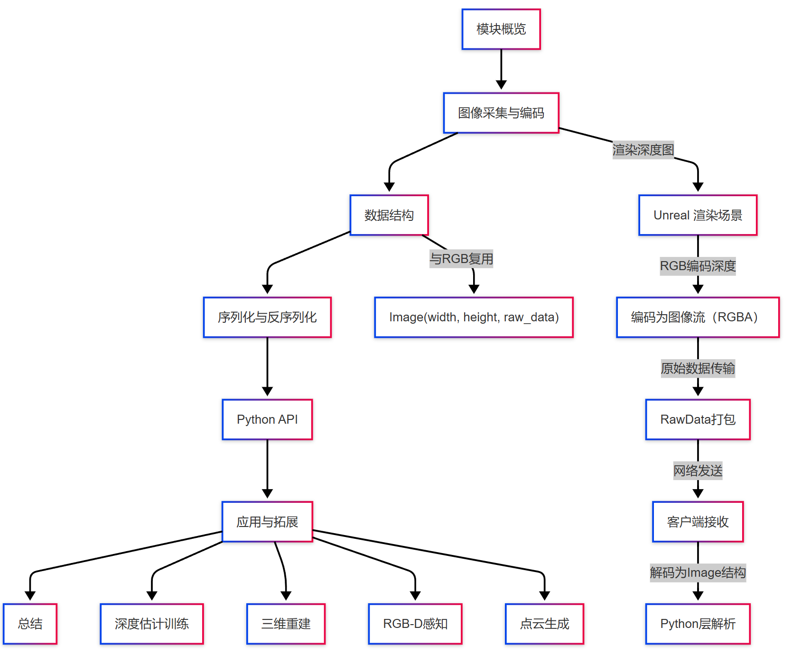
sensor.camera.depth 是 CARLA 提供的专用深度图相机传感器，用于模拟相机视角下的每像素距离场景物体的真实物理距离（单位为米）。其输出为 4 通道图像（RGBA），其中 RGB 通道编码深度信息，Alpha 通道通常为 255。
该传感器常用于：
- 点云生成（结合内参投影）；
- 训练单目深度估计模型；
- RGB-D 感知任务；
- 三维重建与视觉 SLAM；
- 自动驾驶下游任务中的几何感知。
2 成像原理与深度编码
CARLA 中的深度相机使用如下逻辑将真实距离值编码为图像格式：
编码方式（在渲染端）：
CARLA 默认使用 3 通道（R, G, B）编码浮点深度（单位：米）：
depth = (R + G * 256 + B * 256 * 256) / (256^3 - 1) * 1000.0
- 可解码为每像素 0–1000 米内的精度深度图；
- 图像格式为 8-bit 无符号整数，每像素 4 字节（RGBA）。
3 数据结构说明
深度图使用与 RGB 图像相同的数据结构：
定义位置：carla/sensor/data/Image.h
class Image : public SensorData {
public:
uint32_t width;
uint32_t height;
std::vector<uint8_t> data; // RGBA 图像流
};
- 图像以
uint8_t存储，布局为 RGBA； - 深度编码在 RGB 通道，Alpha 通道可忽略。
4 序列化与解码流程
该传感器复用了 ImageSerializer：
定义文件：ImageSerializer.h
- 图像渲染 → 原始字节流打包为
RawData； - 客户端
ImageSerializer::Deserialize()解包为Image对象； - Python 层通过
.raw_data解码深度。
无 MsgPack 序列化，采用原始流传输，更高效适配图像数据密度。
5 Python API 使用示例
以下代码展示如何部署深度相机并转换为实际深度图：
import numpy as np
def decode_depth(image):
array = np.frombuffer(image.raw_data, dtype=np.uint8)
array = array.reshape((image.height, image.width, 4))[:, :, :3].astype(np.uint32)
# 深度解码
depth = (array[:, :, 0] + array[:, :, 1] * 256 + array[:, :, 2] * 256 * 256) / (256**3 - 1) * 1000.0
return depth
# 创建传感器
bp = world.get_blueprint_library().find('sensor.camera.depth')
bp.set_attribute('image_size_x', '800')
bp.set_attribute('image_size_y', '600')
transform = carla.Transform(carla.Location(x=1.5, z=2.4))
camera = world.spawn_actor(bp, transform, attach_to=vehicle)
camera.listen(lambda image: decode_depth(image))
也可保存为深度图图像（伪彩）或导出为 PFM 格式。
6 深度图应用场景
常见用途：
- 点云投影：结合内参可将深度图转换为相机系 3D 点云；
- RGB-D 感知训练：用于单目深度估计、3D 目标检测、深度分割；
- 立体匹配数据集：与
sensor.camera.rgb同步输出，可形成训练样本对； - 三维重建：将连续帧深度图拼接成稠密点云；
- 视觉 SLAM：与 ORB-SLAM2、ElasticFusion 等框架结合使用。
7 小结
sensor.camera.depth 提供高精度、连续、结构一致的深度图像输出，在自动驾驶视觉研究中是不可替代的重要组件。
推荐与 RGB、语义分割、IMU/GNSS 联合使用，用于高质量数据生成、深度估计模型训练与三维结构重建。
第十章：语义分割摄像头传感器系统 （sensor.camera.semantic_segmentation）
1 模块概览
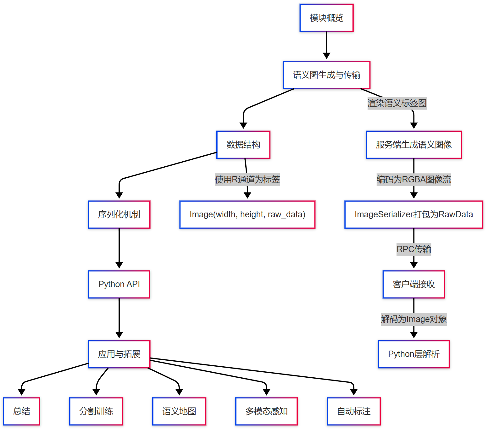
sensor.camera.semantic_segmentation 是 CARLA 提供的语义感知型图像传感器。它将模拟环境中可见物体（如车辆、行人、道路等）按照类别进行像素级别的标注，每帧输出一张语义分割图像，用于训练自动驾驶模型中的感知网络或环境理解模块。
该传感器在数据采集、分割模型训练、语义地图构建、端到端学习等任务中具有广泛应用价值。
2 输出内容与标签定义
该传感器输出为单通道图像，每个像素为一个整数值，表示该像素所属的语义类别。默认图像格式为：
RGBA字节流，实际仅使用R通道（值范围：0–255）；- 每个 ID 对应一种语义类别，CARLA 提供默认映射关系（可自定义）。
示例标签对照表：
| 类别名称 | 类别 ID |
|---|---|
| None | 0 |
| Buildings | 1 |
| Fences | 2 |
| Other | 3 |
| Pedestrians | 4 |
| Poles | 5 |
| Roads | 6 |
| RoadLines | 7 |
| Sidewalks | 8 |
| Vegetation | 9 |
| Vehicles | 10 |
| Wall | 11 |
| TrafficSign | 12 |
3 数据结构与格式说明
语义分割图像复用图像类结构：
定义位置：carla/sensor/data/Image.h
class Image : public SensorData {
public:
uint32_t width;
uint32_t height;
std::vector<uint8_t> data; // 每像素RGBA，语义ID编码在R通道
};
说明：
- 虽然为 RGBA 图像，但只有红色通道包含有效的语义类别；
- 可直接用
image.raw_data→np.uint8→reshape转换为二维语义图。
4 序列化机制说明
sensor.camera.semantic_segmentation 复用 ImageSerializer：
定义文件：ImageSerializer.h
SharedPtr<SensorData> ImageSerializer::Deserialize(RawData &&data) {
return SharedPtr<SensorData>(new data::Image(std::move(data)));
}
- 无额外结构字段，仅传输原始图像数据；
- 每帧语义图由服务端生成（Unreal Engine 渲染）后通过 RPC 系统推送；
- 客户端将数据解码为
Image实例并触发回调。
5 Python API 使用示例
以下示例展示如何创建语义分割传感器，并将图像保存或解析为标签矩阵：
def save_semantic(image):
image.save_to_disk('output/seg_%06d.png' % image.frame, carla.ColorConverter.CityScapesPalette)
bp = world.get_blueprint_library().find('sensor.camera.semantic_segmentation')
bp.set_attribute('image_size_x', '800')
bp.set_attribute('image_size_y', '600')
transform = carla.Transform(carla.Location(x=1.5, z=2.4))
seg_sensor = world.spawn_actor(bp, transform, attach_to=vehicle)
seg_sensor.listen(save_semantic)
自定义解析标签矩阵：
import numpy as np
def parse_semantic(image):
array = np.frombuffer(image.raw_data, dtype=np.uint8)
seg_labels = array.reshape((image.height, image.width, 4))[:, :, 0] # R通道为语义标签
return seg_labels
6 应用与扩展方向
应用场景：
- 训练语义分割模型（如 DeepLab、PSPNet）；
- 联合 RGB/Depth 生成多模态数据集；
- 构建语义 HD 地图（自动车道标注）；
- 强化学习场景中的语义感知输入；
- 与 GNSS/IMU 时间对齐，构建时空标注序列。
拓展建议：
- 替换默认 CityScapes 标签体系，构建自定义语义类别；
- 增加边缘高亮、透明度渲染参数；
- 配合
ColorConverter自定义彩色编码方案； - 输出压缩格式（如 JPEG8）以节省带宽。
7 小结
sensor.camera.semantic_segmentation 是 CARLA 中唯一原生支持像素级语义标注的传感器。它提供标准化标签图，适合用于多种感知任务，尤其在构建多视图、多模态、高频率自动驾驶数据集方面扮演关键角色。
推荐与 RGB/Depth/LiDAR 联合使用，支持多任务模型训练与语义地图制作。
第十一章：CARLA 雷达传感器系统（sensor.radar.ray_cast）
1 模块概览
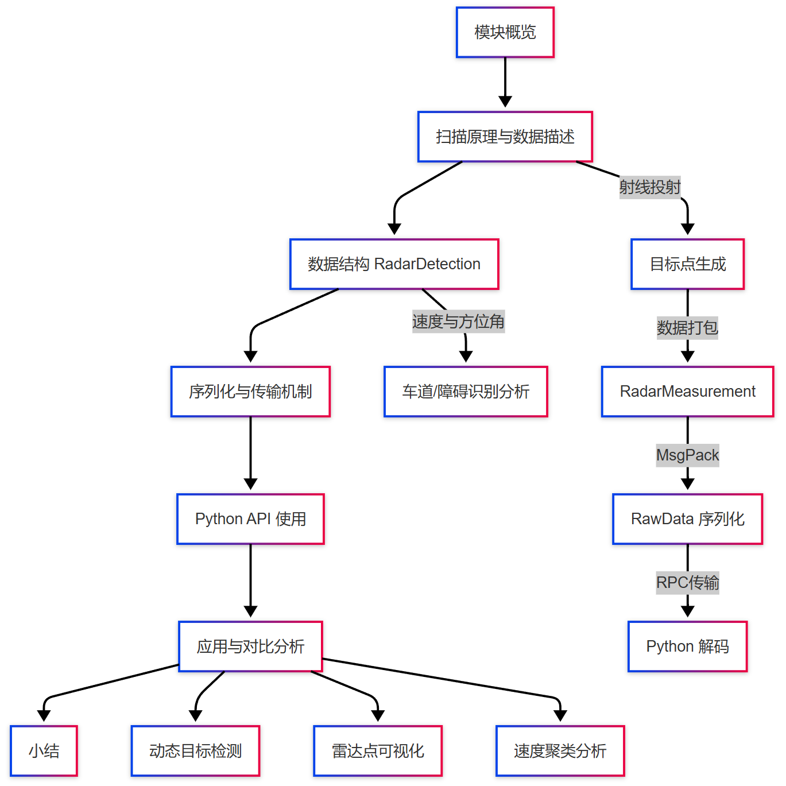
CARLA 中的 sensor.radar.ray_cast 模拟车载雷达的基本特性，通过射线投射模拟雷达波束在三维空间中遇到物体后的反射点。该模块适用于低分辨率目标检测、运动分析、障碍识别等任务。
| 特征 | 描述 |
|---|---|
| 数据频率 | 可配置（推荐 10\~20Hz） |
| 回调格式 | carla.RadarMeasurement |
| 单点数据结构 | carla.RadarDetection |
| 模拟特性 | 包含相对速度、距离、方位角和俯仰角 |
2 扫描原理与数据描述
该传感器通过以下参数定义雷达扫描区域：
horizontal_fov: 水平视场（默认 30 度）vertical_fov: 垂直视场（默认 10 度）range: 有效距离（默认 100 米）
传感器会从车体坐标系出发，发射若干射线，每条射线检测到的目标构成一个 RadarDetection 点。每个点包含：
depth: 到目标的距离（米）azimuth: 方位角（rad）altitude: 俯仰角（rad）velocity: 相对于车辆的径向速度（m/s）
3 数据结构解析：RadarDetection
class carla.RadarDetection:
depth: float # 目标距离（m）
velocity: float # 径向速度（m/s）
azimuth: float # 方位角（rad）
altitude: float # 俯仰角（rad）
- 点云顺序无规律排序，需按角度聚类分析；
velocity可用于区分静止物体与移动目标；- 无 ID，需自行跟踪识别。
4 序列化与传输机制
CARLA 将 RadarMeasurement 数据序列化为 RawData，通过 RPC 管道传输至客户端。与其他传感器不同，雷达数据较小，传输效率高。
| 步骤 | 描述 |
|---|---|
| ① 触发帧回调 | 服务端检测帧时更新射线投射结果 |
| ② 序列化 | 每个 RadarDetection 被编码为字节流结构 |
| ③ 客户端接收 | Python 客户端接收 RadarMeasurement 并解码为点集 |
5 Python API 使用示例
import carla
def radar_callback(data):
for detection in data:
print(f"Distance: {detection.depth:.2f} m, Speed: {detection.velocity:.2f} m/s")
world = client.get_world()
bp_lib = world.get_blueprint_library()
radar_bp = bp_lib.find('sensor.radar.ray_cast')
radar_bp.set_attribute('horizontal_fov', '35')
radar_bp.set_attribute('vertical_fov', '10')
radar_bp.set_attribute('range', '50')
spawn_point = carla.Transform(carla.Location(x=2.0, z=1.0))
radar = world.spawn_actor(radar_bp, spawn_point, attach_to=vehicle)
radar.listen(lambda data: radar_callback(data))
6 应用与对比分析
| 应用领域 | 描述 |
|---|---|
| 自动驾驶感知 | 用于检测移动目标（如对向车辆、自行车） |
| 模拟预警系统 | 可用于构建碰撞预警、AEB 仿真 |
| 天气鲁棒性 | 雾、雨等极端天气下性能优于 LiDAR |
需注意：雷达检测精度有限，不能替代 LiDAR 或相机的精确识别能力，适合作为冗余传感器或动态监测模块。
7 小结
sensor.radar.ray_cast是 CARLA 提供的轻量级雷达仿真模块；- 支持实时回调并提供速度信息；
- 易于部署和组合，但需注意精度限制。
第十二章：责任敏感安全传感器系统（sensor.other.rss）
1 模块概览
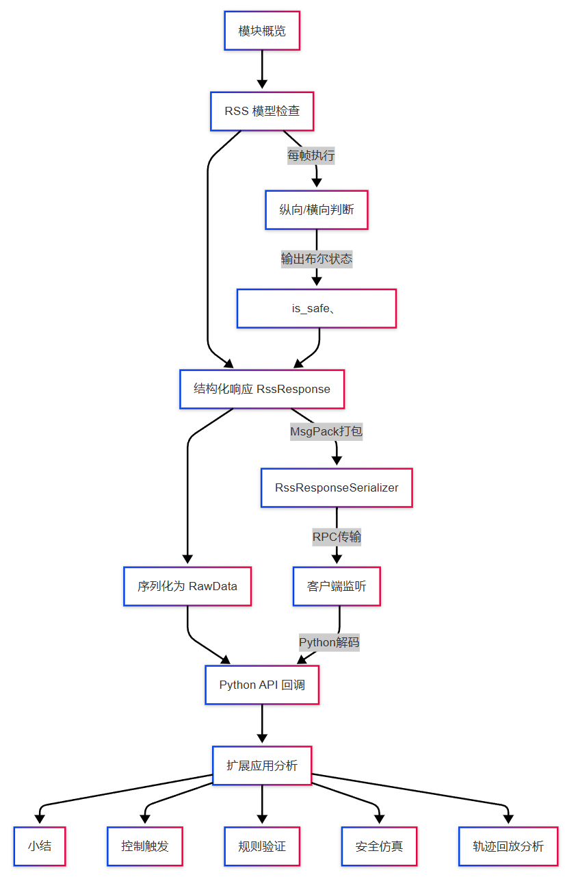
CARLA 中的 sensor.other.rss 是对 Mobileye 提出的 RSS（Responsibility-Sensitive Safety）模型 的仿真实现。它评估当前车辆是否在纵向和横向方向上满足合理安全距离，若违反安全规则，则通过事件输出提供结构化响应。
该传感器广泛应用于以下领域：
- 自动驾驶系统的安全性评估
- 安全冗余感知与控制系统回退逻辑验证
- 车辆规划/控制模块中的AEB 与干预触发检测
2 RSS 模型简介与传感器原理
RSS 模型基于一套形式化定义的安全距离计算规则。CARLA 内置实现使用以下核心规则：
| 项目 | 含义 |
|---|---|
| 最小纵向距离 | 基于当前速度差、最大加速度计算 |
| 最小横向距离 | 允许目标在紧急变道情况下仍能避免碰撞 |
| 响应等级 | 安全、警告、紧急干预（可自定义响应策略） |
传感器工作流程：
- 每帧检查当前主车与其他车辆间的 RSS 状态
- 生成 RSS 响应结构体（包含：距离状态、是否违反、安全响应等级）
- 通过 RPC 通道传递给客户端
- Python 层接收结构化安全状态信息
3 数据结构说明：RssResponse
定义位置：carla/sensor/data/RssResponse.h
struct RssResponse {
bool is_safe; // 是否符合安全规则
bool longitudinal_safe; // 纵向是否安全
bool lateral_safe; // 横向是否安全
std::string response_status; // 可为 "Safe", "Brake", "Warning"
};
说明：
is_safe = longitudinal_safe && lateral_safe- 若任一方向违反规则，
response_status将标识对应响应等级 - 可拓展为枚举式响应策略触发器
4 序列化与触发机制
CARLA 使用专属的 RssResponseSerializer 对结构体进行 MsgPack 编码：
struct Data {
bool is_safe;
bool longitudinal_safe;
bool lateral_safe;
std::string response_status;
MSGPACK_DEFINE_ARRAY(is_safe, longitudinal_safe, lateral_safe, response_status)
};
序列化过程：
- 服务端检测每帧 RSS 状态并生成
RssResponse - 使用
RssResponseSerializer::Serialize()打包为RawData - 客户端使用
Deserialize()恢复为SensorData实例 .listen()回调函数进行实时判断/记录/控制触发
5 Python API 使用示例
def rss_callback(event):
if not event.is_safe:
print(f"[RSS] 安全违规：状态={event.response_status}")
else:
print("[RSS] 安全状态良好")
bp = world.get_blueprint_library().find('sensor.other.rss')
rss_sensor = world.spawn_actor(bp, carla.Transform(), attach_to=vehicle)
rss_sensor.listen(rss_callback)
该传感器无空间坐标要求，直接附着于车辆即可。内部逻辑自动检测与其他交通参与者的 RSS 状态。
6 应用案例与扩展分析
| 场景用途 | 描述 |
|---|---|
| 控制回退系统 | AEB（自动紧急制动）干预触发、最小安全距离报警 |
| 路测仿真回放分析 | 重放轨迹时重建“是否违规”记录序列，用于模型责任分析 |
| 安全规划调优 | 与行为规划器集成时提供实时限制反馈，避免非法动作规划 |
| 模拟工况生成 | 快速生成车道偏离、跟车过近、急加速等 RSS 违规场景 |
可将
response_status输出为 CSV、图像覆盖等形式进行对比标注。
7 小结
sensor.other.rss 提供了对 Mobileye-RSS 安全规则的结构化支持，是自动驾驶系统安全性评估与回退逻辑验证的重要传感器。其输出直观、数据小、结构清晰，适合嵌入任意仿真任务中。